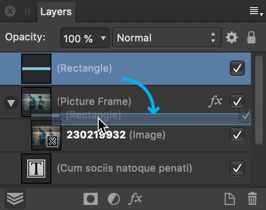

Clipping involves positioning one object inside another, creating a parent - child layer relationship. The path of the parent object becomes the new boundaries for the child object. Any areas of the child object which lie outside the parent object's path are masked (hidden).
An image clipped inside artistic text to give it texture.

Layers panel showing the parent-child relationship of the above clipped image being created.
About clipping
Any object can act as a parent or child in clipping relationships. Therefore both vector objects and pixel layer content can be either clipped or clipping objects.
When scaling a parent object, child (clipped) objects scale to maintain the correct aspect ratio. Scaling a clipped object has no effect on the parent object. A clipped object can be edited independently from its parent, e.g. adjusting color, opacity, and/or blend mode.
To clip objects:
On the page, position the object to be clipped so it overlaps the object which will perform the clipping.
On the Layers panel, drag the object to be clipped on top of the object which is to perform the clipping. A blue highlight appears to target the layer.
The clipped object is nested within the clipping object on the Layers panel, i.e. it has become a child of the clipping object.
To select clipped objects:
In the Layers panel, expand the clipping object's contents (if needed) by clicking the layer's arrow.
Click to select the clipped object.
The clipped object can now be moved and edited as needed.
To remove clipping from an object (unclip):
On the Layers panel, drag the clipped object to a new position outside its parent's entry on the layer stack.
To resize an object without scaling its child layer content:
Select the parent object with the Move Tool, and then check Lock Children on the context toolbar. Resize the parent object to your chosen size.